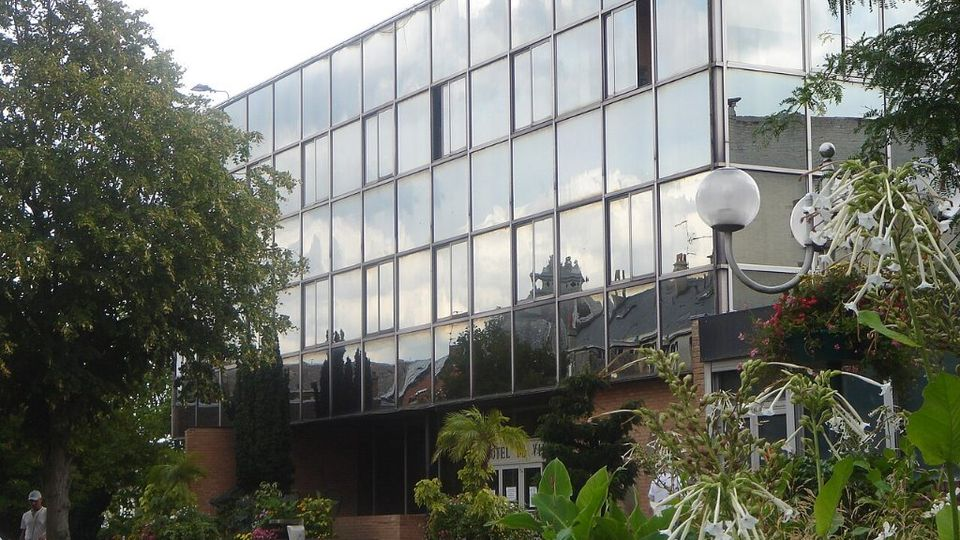
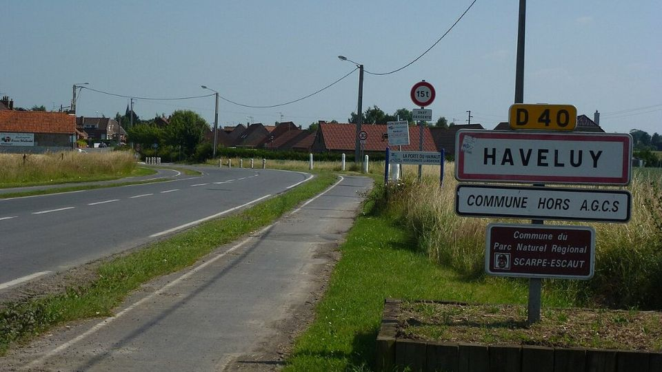
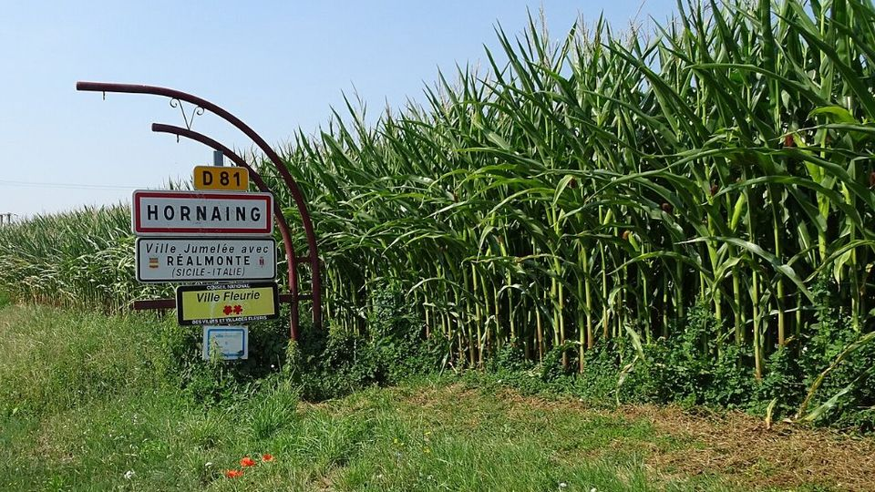
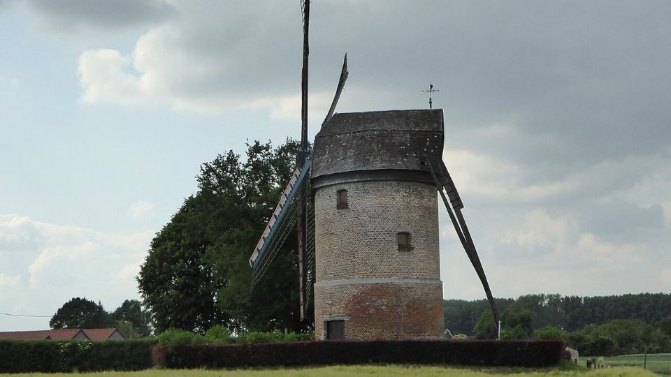
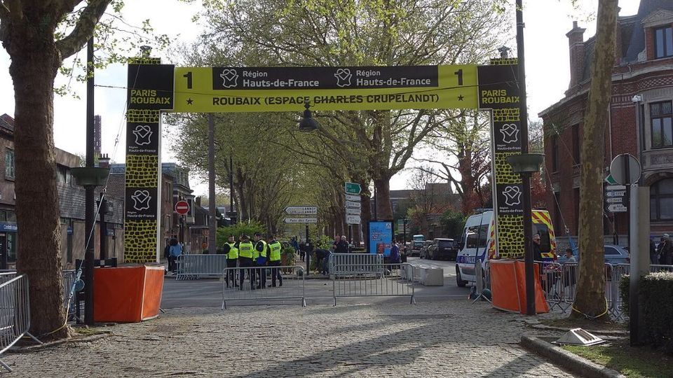

Le parcours
2026
Départ de Denain, arrivée au vélodrome André-Pétrieux. Trois secteurs pavés de plus qu'en 2025, et un final identique à celui des hommes sur les 17 derniers secteurs.
Ce qui change en 2026
Le parcours féminin perd 5 km par rapport à 2025, mais gagne trois secteurs pavés, dont Haveluy à Wallers, un quatre étoiles avec un virage à angle droit en son milieu. Au total, 4,5 km de pavés en plus.
Les femmes ne passent pas par la Trouée d'Arenberg, réservée au parcours des hommes. À partir du secteur 17, elles empruntent exactement les mêmes pavés.
Les 20 secteurs
Numérotés à rebours, du premier rencontré (20) au dernier avant le vélodrome (1). Le secteur 8 se court en deux morceaux.
| N° | Secteur | Début | Longueur | Difficulté |
|---|---|---|---|---|
| 20 | Solesmes à Haussy | km 29,3 | 800 m | ★★ |
| 19 | Saulzoir à Verchain-Maugré | km 36,1 | 1 200 m | ★★ |
| 18 | Haveluy à Wallers | km 52,4 | 2 500 m | ★★★★ |
| 17 | Hornaing à Wandignies | km 60,7 | 3 700 m | ★★★★ |
| 16 | Warlaing à Brillon | km 68,1 | 2 400 m | ★★★ |
| 15 | Tilloy à Sars-et-Rosières | km 71,6 | 2 400 m | ★★★★ |
| 14 | Beuvry-la-Forêt à Orchies | km 77,9 | 1 400 m | ★★★ |
| 13 | Orchies | km 83,0 | 1 700 m | ★★★ |
| 12 | Auchy-lez-Orchies à Bersée | km 89,1 | 2 700 m | ★★★★ |
| 11 | Mons-en-Pévèle | km 94,5 | 3 000 m | ★★★★★ |
| 10 | Mérignies à Avelin | km 100,5 | 700 m | ★★ |
| 9 | Pont-Thibault à Ennevelin | km 103,9 | 1 400 m | ★★★ |
| 8 | Templeuve – L'Épinette | km 109,3 | 200 m | ★ |
| 8 | Templeuve – Moulin-de-Vertain | km 109,8 | 500 m | ★★ |
| 7 | Cysoing à Bourghelles | km 116,3 | 1 300 m | ★★★ |
| 6 | Bourghelles à Wannehain | km 118,8 | 1 100 m | ★★★ |
| 5 | Camphin-en-Pévèle | km 123,2 | 1 800 m | ★★★★ |
| 4 | Carrefour de l'Arbre | km 126,0 | 2 100 m | ★★★★★ |
| 3 | Gruson | km 128,3 | 1 100 m | ★★ |
| 2 | Willems à Hem | km 134,9 | 1 400 m | ★★ |
| 1 | Roubaix – Espace Charles Crupelandt | km 141,7 | 300 m | ★ |
Source : A.S.O., via Cyclingnews (kilomètre de début calculé à partir des kilomètres restants annoncés).
Sur la route
Quelques lieux qu'on traverse entre Denain et Roubaix.

Denain
La ville de départ. 122 coureuses au départ en 2026.

Haveluy
Le secteur 18, Haveluy à Wallers, fait son entrée dans la course féminine.

Hornaing
Point de départ du secteur 17, le plus long du parcours : 3 700 m.

Le moulin de Vertain
Les coureuses passent à son pied sur 500 m de pavés, à Templeuve.

Espace Crupelandt
Les 300 derniers mètres de pavés, dédiés au seul vainqueur né à Roubaix.

Le vélodrome
La ligne d'arrivée, sur la piste en béton du vélodrome de Roubaix.